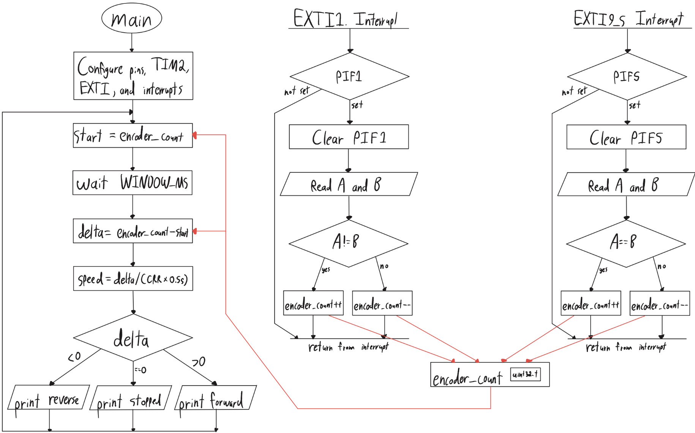
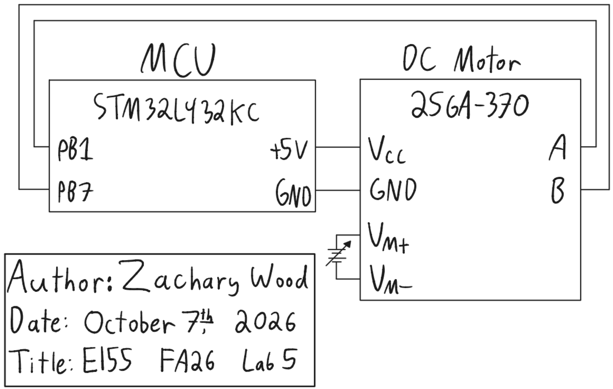

Lab 5: Interrupts
Introduction
The goal of this lab was to measure the angular velocity and direction of a brushed DC motor with the STM32L432KC. The MCU decodes the motor’s quadrature encoder with interrupts on both edges of both channels and prints the direction and speed to the debug terminal twice per second.
Design and Testing Methodology
MCU Implementation
The design builds on the GPIO, RCC, flash, and timer libraries from the course’s interrupt tutorial. I fixed one bug in the timer library: delay_millis() set ARR to the requested delay, but the counter rolls over after ARR + 1 ticks, so every delay lasted 1 ms too long. It now sets ARR = ms - 1.
I wrote a new library, STM32L432KC_EXTI, with one function, extiEnableEdges(pin, irq). It enables the SYSCFG clock, routes the pin to its EXTI line in SYSCFG_EXTICRx, unmasks the line in EXTI_IMR1, enables both the rising and falling triggers in EXTI_RTSR1 and EXTI_FTSR1, and enables the line’s interrupt in the NVIC.
EXTI line n can only be driven by pin n of one port, so the two encoder channels must use different pin numbers. Encoder A is on PB1 (EXTI1, handled by EXTI1_IRQHandler) and encoder B is on PB5 (EXTI5, handled by EXTI9_5_IRQHandler).
Each handler clears its pending flag, reads both channels, and increments or decrements a shared volatile counter. Forward rotation steps (A, B) through 00, 10, 11, 01, so after an edge on A the two channels differ (A != B), and after an edge on B they match (A == B). Reverse rotation produces the opposite result, so:
| Handler | Forward (count up) | Reverse (count down) |
|---|---|---|
EXTI1_IRQHandler (A changed) |
A != B | A == B |
EXTI9_5_IRQHandler (B changed) |
A == B | A != B |
The handlers do no timing or arithmetic. The main loop records the encoder counter, waits 500 ms with TIM2, and takes the difference in the encoder counter. The encoder counter is a free-running uint32_t, so the unsigned difference is exact across wraparound, and casting it to int32_t gives the signed net count. The sign is the direction, and a stopped motor gives a difference of zero, meaning the motor is stopped.
Figure 1 shows the main loop and both interrupt handlers. They communicate only through encoder_count (red arrows).

Hardware
The encoder is powered from the development board’s 5 V rail, and its A and B outputs connect directly to PB1 and PB5. Both pins are 5 V tolerant (FT) according to Table 14 of the STM32L432KC datasheet and are not connected to pins that are not 5 V tolerant according to UM1956 Table 8. The internal pull resistors are left disabled, because Table 57 of the datasheet requires them to be disabled when a pin is held above V_DD + 0.3 V. The motor is powered by an external bench supply.
Testing
I ran the motor from 0 V to 12 V on the bench supply and compared the printed speed with the nominal 2.5 rev/s at 12 V. I reversed the supply leads to check that the reported direction changed, turned the supply off to check that the speed read zero, and lowered the voltage until the motor barely turned to check that the speed stayed non-zero.
Technical Documentation
The source code for the project can be found in the associated Github repository.
Schematic
Figure 2 shows the schematic of the physical circuit. On-board components, including the Nucleo-L432KC, are documented in the development board schematic.

Calculations
Resolution. The encoder produces 408 pulses per channel per revolution. Counting both edges of both channels gives
\[CPR = 4 \times 408 = 1632 \text{ counts/rev}\]
Velocity. With \(\Delta\) net counts in a window of \(T = 0.5\) s,
\[\omega = \frac{\Delta}{CPR \cdot T} \text{ rev/s}\]
One count is the smallest measurable change, so the resolution, and the lowest non-zero speed the design reports, is
\[\omega_{min} = \frac{1}{1632 \times 0.5\text{ s}} = 1.23 \times 10^{-3}\text{ rev/s}\]
Update rate. Each loop takes the 0.5 s window plus the time to print, so the display updates at just under 2 Hz, above the required 1 Hz.
Expected reading. At the motor’s rated 2.5 rev/s, the expected count per window is
\[\Delta = 2.5 \times 1632 \times 0.5 = 2040\]
and edges arrive every \(1/(2.5 \times 1632) = 245\ \mu\text{s}\) on average.
Measured reading. At 12 V the design reported 2.8 rev/s, about 2285 counts per window, which is 12% above the nominal 2.5 rev/s that the lab gives as approximate. Reversing the supply reversed the reported direction.
Interrupts vs. Polling
A polling design must sample both channels at least once between consecutive edges or else it would miss transitions. At 2.5 revolutions per second, that interval averages \(245\ \mu\text{s}\), and it shrinks in proportion to speed. Any work in the polling loop, such as a call to printf, adds to the sampling interval, so the loop either misses edges at high speed or cannot do anything else.
With interrupts, the hardware latches each edge in EXTI_PR1 as soon as it occurs, and the main loop is free to block in a delay or print. An edge is only lost if a second edge on the same line arrives before the handler clears the first, so the maximum speed is set by the handler’s duration rather than by the main loop.
Results and Discussion
The design meets all of the lab’s proficiency and excellence requirements. It reported 2.8 rev/s at 12 V, 0.2 rev/s at 1 V, 0.05 rev/s at 0.3 V, and zero with the supply off, and the reported direction followed the supply polarity. It counts both edges of both channels with interrupts, updates at just under 2 Hz, and connects the encoder only to 5 V tolerant pins.
The handlers could be made faster. An edge is lost if a second edge on the same line arrives before the handler clears the first, so a shorter handler raises the maximum speed the design can measure and leaves more CPU time for the main loop. Each digitalRead() call itself calls gpioPinToBase(), gpioPinToPort(), gpioPortToBase(), and gpioPinOffset(), so one edge costs ten function calls. Every call adds a branch, pushes the return address and saved registers onto the stack, and pops them on return, and the project builds without optimization, so none of these calls are inlined. As the AI prototype did, a single read of GPIOB->IDR with masks for bits 1 and 5 replaces all ten calls with one load and two bitwise operations, and it also samples both channels at the same instant. The cost is that the handler would then hardcode port B instead of following the pin definitions in main.h.
Conclusion
The design measured the speed and direction of a DC motor by counting both edges of both encoder channels with interrupts, using an EXTI driver written from the reference manual.
I spent 10 hours on this lab: 2 hours reviewing the lecture and manuals, 4 hours coding, 2 hours debugging hardware, and 2 hours writing the report and completing the AI prototype.
AI Prototype Summary
The purpose of this AI prototype is to test whether an LLM can write correct interrupt-driven embedded C.
Write me interrupt handlers to interface with a quadrature encoder. I’m using the STM32L432KC, what pins should I connect the encoder to in order to allow it to easily trigger the interrupts?
The LLM recommended PA0 and PA1 because they are on EXTI lines 0 and 1, which have their own handlers, and are on the same port, so one read of GPIOA->IDR captures both channels. It also listed pins on the Nucleo board to avoid, including PA5 and PA6, which are tied to PB7 and PB6 through solder bridges.
Its decoder reads both channels on every edge and looks up the count change in a 16-entry state table indexed by the previous and current states. Transitions in which both channels change at once are counted as errors. It enabled the internal pull-ups and noted that 5 V encoder outputs require checking the pins’ I/O structure or using a level shifter. It also suggested TIM2’s hardware encoder mode as the standard alternative for motor encoders.
#include <stdint.h>
#include "stm32l4xx.h"
#define ENC_A_PIN 0U
#define ENC_B_PIN 1U
#define ENC_IRQ_PRIORITY 1U
static volatile int32_t encoder_count;
static volatile uint32_t encoder_errors;
static uint32_t encoder_state;
static const int8_t encoder_table[16] = {
0, -1, 1, 0,
1, 0, 0, -1,
-1, 0, 0, 1,
0, 1, -1, 0
};
static inline uint32_t encoder_read_state(void)
{
uint32_t idr = GPIOA->IDR;
uint32_t a = (idr >> ENC_A_PIN) & 1U;
uint32_t b = (idr >> ENC_B_PIN) & 1U;
return (a << 1) | b;
}
static void encoder_update(void)
{
uint32_t next = encoder_read_state();
int8_t delta = encoder_table[(encoder_state << 2) | next];
if (delta != 0) {
encoder_count += delta;
} else if (next != encoder_state) {
encoder_errors++;
}
encoder_state = next;
}
void encoder_init(void)
{
RCC->AHB2ENR |= RCC_AHB2ENR_GPIOAEN;
RCC->APB2ENR |= RCC_APB2ENR_SYSCFGEN;
(void)RCC->APB2ENR;
GPIOA->MODER &= ~(GPIO_MODER_MODE0_Msk | GPIO_MODER_MODE1_Msk);
GPIOA->PUPDR = (GPIOA->PUPDR
& ~(GPIO_PUPDR_PUPD0_Msk | GPIO_PUPDR_PUPD1_Msk))
| GPIO_PUPDR_PUPD0_0 | GPIO_PUPDR_PUPD1_0;
SYSCFG->EXTICR[0] &= ~(SYSCFG_EXTICR1_EXTI0_Msk
| SYSCFG_EXTICR1_EXTI1_Msk);
EXTI->RTSR1 |= EXTI_RTSR1_RT0 | EXTI_RTSR1_RT1;
EXTI->FTSR1 |= EXTI_FTSR1_FT0 | EXTI_FTSR1_FT1;
EXTI->IMR1 |= EXTI_IMR1_IM0 | EXTI_IMR1_IM1;
EXTI->PR1 = EXTI_PR1_PIF0 | EXTI_PR1_PIF1;
encoder_state = encoder_read_state();
encoder_count = 0;
encoder_errors = 0;
NVIC_SetPriority(EXTI0_IRQn, ENC_IRQ_PRIORITY);
NVIC_SetPriority(EXTI1_IRQn, ENC_IRQ_PRIORITY);
NVIC_ClearPendingIRQ(EXTI0_IRQn);
NVIC_ClearPendingIRQ(EXTI1_IRQn);
NVIC_EnableIRQ(EXTI0_IRQn);
NVIC_EnableIRQ(EXTI1_IRQn);
}
void EXTI0_IRQHandler(void)
{
EXTI->PR1 = EXTI_PR1_PIF0;
encoder_update();
}
void EXTI1_IRQHandler(void)
{
EXTI->PR1 = EXTI_PR1_PIF1;
encoder_update();
}
int32_t encoder_get_count(void)
{
return encoder_count;
}
uint32_t encoder_get_errors(void)
{
return encoder_errors;
}void encoder_timer_init(void)
{
RCC->AHB2ENR |= RCC_AHB2ENR_GPIOAEN;
RCC->APB1ENR1 |= RCC_APB1ENR1_TIM2EN;
(void)RCC->APB1ENR1;
GPIOA->MODER = (GPIOA->MODER
& ~(GPIO_MODER_MODE0_Msk | GPIO_MODER_MODE1_Msk))
| GPIO_MODER_MODE0_1 | GPIO_MODER_MODE1_1;
GPIOA->AFR[0] = (GPIOA->AFR[0]
& ~(GPIO_AFRL_AFSEL0_Msk | GPIO_AFRL_AFSEL1_Msk))
| (1U << GPIO_AFRL_AFSEL0_Pos)
| (1U << GPIO_AFRL_AFSEL1_Pos);
GPIOA->PUPDR = (GPIOA->PUPDR
& ~(GPIO_PUPDR_PUPD0_Msk | GPIO_PUPDR_PUPD1_Msk))
| GPIO_PUPDR_PUPD0_0 | GPIO_PUPDR_PUPD1_0;
TIM2->CR1 = 0;
TIM2->CCMR1 = TIM_CCMR1_CC1S_0 | TIM_CCMR1_CC2S_0
| (3U << TIM_CCMR1_IC1F_Pos)
| (3U << TIM_CCMR1_IC2F_Pos);
TIM2->CCER = 0;
TIM2->SMCR = TIM_SMCR_SMS_0 | TIM_SMCR_SMS_1;
TIM2->ARR = 0xFFFFFFFFU;
TIM2->CNT = 0;
TIM2->CR1 = TIM_CR1_CEN;
}
int32_t encoder_timer_get_count(void)
{
return (int32_t)TIM2->CNT;
}I then asked it to adapt the decoder to my code (“Make my main use it:” followed by my lab5_zw.c). It kept my pins and main loop, replaced the two digitalRead calls with one read of GPIOB->IDR, called the state table from both handlers, and set both handlers to the same NVIC priority. The adapted version ran at 12 V and its readings appeared consistent with my design.
#define ENC_A_BIT 1U
#define ENC_B_BIT 5U
#define ENC_IRQ_PRIORITY 1U
static volatile uint32_t encoder_count = 0;
static volatile uint32_t encoder_errors = 0;
static uint32_t encoder_state = 0;
// State s = (A << 1) | B; table index = (s_prev << 2) | s_next.
static const int8_t encoder_table[16] = {
0, -1, 1, 0,
1, 0, 0, -1,
-1, 0, 0, 1,
0, 1, -1, 0
};
static uint32_t encoder_read_state(void) {
uint32_t idr = GPIOB->IDR;
uint32_t a = (idr >> ENC_A_BIT) & 1U;
uint32_t b = (idr >> ENC_B_BIT) & 1U;
return (a << 1) | b;
}
static void encoder_update(void) {
uint32_t next = encoder_read_state();
int8_t delta = encoder_table[(encoder_state << 2) | next];
if (delta != 0) {
encoder_count += (uint32_t)(int32_t)delta;
} else if (next != encoder_state) {
encoder_errors++;
}
encoder_state = next;
}
void EXTI1_IRQHandler(void) {
if (EXTI->PR1 & EXTI_PR1_PIF1) {
EXTI->PR1 = EXTI_PR1_PIF1;
encoder_update();
}
}
void EXTI9_5_IRQHandler(void) {
if (EXTI->PR1 & EXTI_PR1_PIF5) {
EXTI->PR1 = EXTI_PR1_PIF5;
encoder_update();
}
}The output was solid. The pin advice was correct, including the solder bridges, which I confirmed in UM1956. The state table is neat and compares against the previous state, so two edges handled late cannot be counted in the wrong direction, and it counts impossible transitions as errors. It is a little harder to read and understand. Two parts did not fit this lab: it enabled pull-ups and recommended the timer’s encoder mode.